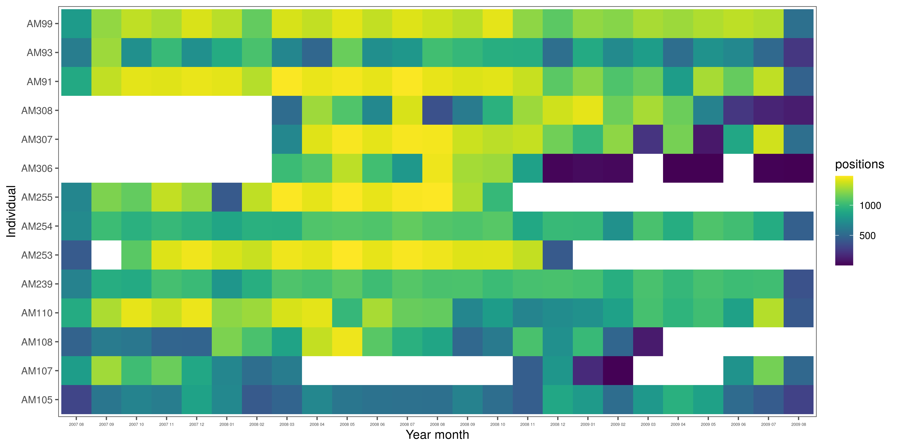
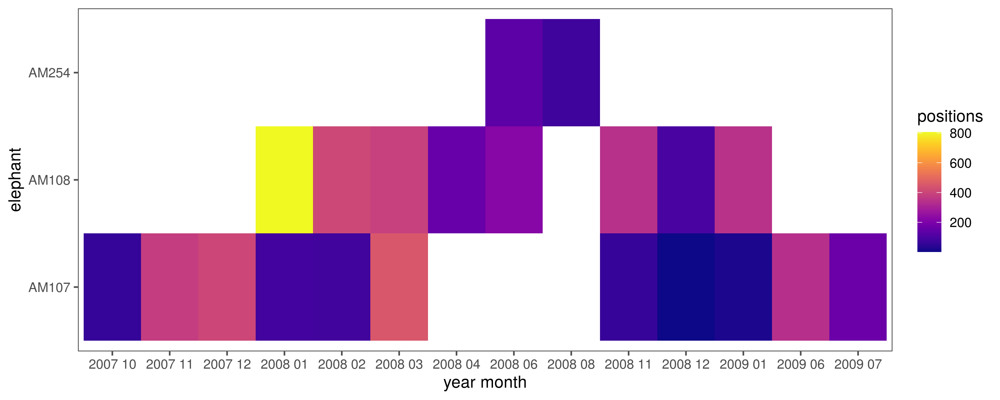

Section 5 Preliminary data preparation
This section prepares the raw data to be used in the main methods.
5.1 Load libraries
5.2 Load data
# load the preliminary data
ele.dry = read_csv("data/ele_data/ele.dry.csv")
ele.wet = read_csv("data/ele_data/ele.wet.csv")
# combine to form a single dataset with seasons assigned
ele.dry$season = "dry"
ele.wet$season = "wet"
#'rbind the data
ele = bind_rows(ele.dry, ele.wet)
# susbet columns and rename
ele = ele %>%
select(id = ID, ref = REF, long = LONGITUDE, lat = LATITUDE,
temp = TEMP, season, xutm = XUTM, yutm = YUTM,
time = Date_time, landscape = landsca, land.val = VALUE,
density = DENSITY, woody.density = `woody density`,
veg.class = VEG_CLASS, gertcode = Gertcode, v = STEPLENGTH,
angle = TURNANGLE, heading = BEARING,
distw = dist_water, distr = Dist_river)
#'change time to posixct via char
ele$time = as.POSIXct(as.character(ele$time), tz = "SAST", format = "%d-%m-%Y %H:%M")
# add hour and change column types
ele = ele %>%
mutate(hour = hour(time), season = as.factor(season),
gertcode = as.factor(gertcode))5.3 Preliminary checks
We suspect that rows are not ordered in time. Check for this and correct it. Save the resulting data as data/ele_total.csv.
# check for the minimum time lag between points. this must be greater than 0
# negtive time lags indicate positions are not ordered by time
ele %>%
split(ele$id) %>%
map_chr(function(l){
min(as.numeric(diff(l$time))) > 0
})
# check for weird coordinates
# what are the bounding boxes (xmin, xmax, ymin, ymax) of each ele
ele %>%
group_by(id) %>%
summarise_at(vars(long, lat), list(min=min, max=max))
# now check for ridiculous trajectories
if(!dir.exists("figs/tracks")){
dir.create("figs/tracks")
}
# get kruger
kruger = st_read("data/kruger_clip/") %>%
`st_crs<-`(4326)
kruger_utm = kruger %>%
st_transform(32736)
ele %>%
split(ele$id) %>%
map(function(a){
a = arrange(a, time)
fig_a_utm = ggplot(kruger_utm)+
geom_sf(fill = NA)+
geom_path(data = a, aes(xutm, yutm), lwd = 0.1)+
theme_few()+
labs(x=NULL, y=NULL, title = unique(a$id), subtitle = "UTM data")
fig_a = ggplot(kruger)+
geom_sf(fill = NA)+
geom_path(data = a, aes(long, lat), lwd = 0.1)+
theme_few()+
labs(x=NULL, y=NULL, title = unique(a$id), subtitle = "longlat data")
fig = gridExtra::grid.arrange(fig_a, fig_a_utm, ncol = 2)
ggsave(fig, filename = glue('figs/tracks/track_{unique(a$id)}.png'))
})Some elephants (239, 254, 255, 307, 308) have errored UTM coordinates which need to be ffixed. There are two issues: first, poor merging of the UTM converted coordinates with the parent data.frame at some stage prior to being processed for this paper (239 – 255). Second, two elephants, 307 and 308, seem to have had their UTM coordinates cropped to the limits of the Kruger shapefile, while the long-lat coordinates are preserved.
(#fig:show_ele_problems1)Problematic conversion of elephant tracking data coordinates from long-lat to UTM.
(#fig:show_ele_problems2)Problematic conversion of elephant tracking data coordinates from long-lat to UTM.
5.4 Fix problematic coordinates
# fix all elephant utm coordinates by doing a fresh transform
ele = ele %>%
split(ele$id) %>%
map(function(l){
geo = select(l, time, long, lat) %>%
arrange(time)
l = select(l, -xutm, -yutm)
utm = st_as_sf(geo, coords = c("long", "lat")) %>%
`st_crs<-`(4326) %>%
st_transform(32736) %>%
st_coordinates() %>%
as_tibble() %>%
rename(xutm = "X", yutm = 'Y')
l = cbind(l, utm)
})
# run time checks
ele %>%
split(ele$id) %>%
map_chr(function(l){
min(as.numeric(diff(l$time))) > 0
})
# examine tracks on a map
prob_eles = filter(ele, id %in% c("AM239", "Am254", "AM255", "AM307", "AM308"))
fig_fixed_eles = ggplot(kruger_utm)+
geom_sf(fill = NA)+
geom_path(data = prob_eles, aes(x=xutm, y=yutm, group = id, col = id), lwd = 0.1)+
theme_few()+
labs(x=NULL, y=NULL)
# save figure
ggsave(fig_fixed_eles, filename = glue('figs/tracks/track_fixed_eles.png'))(#fig:show_ele_fixed)Problem elephant coordinates are now fixed.
5.5 Save fixed coordinates
5.6 Data distribution in time
5.6.1 Seasonal summary
# how many positions per elephant per year and season
data_season_summary = ele %>%
group_by(year_season = paste(year(time), season, sep = " ")) %>%
count(id)
# make figure
fig_season_summary = ggplot(data_season_summary)+
geom_tile(aes(x = id, y = year_season, fill = n))+
scale_fill_viridis()+
theme_few()+
labs(x = "elephant id",y = "year & season", fill = "positions")+
coord_flip()
# save figure
ggsave(fig_season_summary, filename = "figs/fig_season_summary.png",
width = 8, height = 6)
5.6.2 Monthly summary
# positions per elephant per month and year
data_month_summary = group_by(ele,
year_month = glue('{year(time)} {str_pad(month(time), width = 2, pad = "0")}')) %>%
count(id)
# make figure
fig_month_summary = ggplot(data_month_summary)+
geom_tile(aes(x = id, y = year_month, fill = n))+
scale_fill_viridis()+
theme_few()+
theme(axis.text.x = element_text(size = 4))+
labs(fill = "positions", x = "Individual", y = "Year month")+
coord_flip()
# save figure
ggsave(fig_month_summary, filename = "figs/fig_month_summary.png",
width = 12, height = 6)
5.7 Elephants near the weather station
Which elephants are within 10 km of the weather station at Skukuza, and when?
5.7.1 Load Skukuza
The weather station at Skukuza (24.9 S, 31.5 E) is our source for ambient temperature data.
5.7.2 Select elephants within 10 km
5.7.3 Get distribution over time
#'which eles are here and over which months?
data_tower_summary = group_by(ele_tower,
year_month = glue('{year(time)} {str_pad(month(time), width = 2, pad = "0")}')) %>%
count(id)
# make figure
fig_tower_summary =
ggplot(data_tower_summary)+
geom_tile(aes(x = id, y = year_month, fill = n))+
scale_fill_viridis(option="C")+
theme_few()+
labs(fill = "positions", x = "elephant", y = "year month")+
coord_flip()
# save figure
ggsave(fig_tower_summary, filename = "figs/fig_tower_summary.png",
width = 10, height = 4)